Судьба родительских цепей
Удвоение ДНК начинается с разделения двух комплементарных цепей. Каждая служит матрицей для собственной дочерней цепи. В результате две молекулы сохраняют по одной цепи исходного дуплекса. Такое распределение называют полуконсервативной репликацией. Последовательность оснований подсказывает возможный механизм копирования, однако сама по себе не доказывает судьбу родительского материала.
В 1958 году Мэтью Мезельсон и Франклин Сталь проследили за ДНК нескольких поколений E. coli. После перехода бактерий со среды с тяжёлым азотом ¹⁵N на среду с ¹⁴N вновь образованные цепи содержали преимущественно лёгкий изотоп. В градиенте CsCl молекулы ДНК распределялись по плавучей плотности. После одного удвоения обнаружилась одна полоса промежуточной плотности. Консервативная модель предсказывала две полосы уже в этом поколении. После второго удвоения появились промежуточная и лёгкая полосы. Дисперсная модель предсказывала постепенный сдвиг единственной полосы. Наблюдения согласовались с сохранением целой родительской цепи в каждом дочернем дуплексе.
Полоса в этой задаче представляет множество молекул с близкой плотностью. Две цепи одного дуплекса во время измерения остаются ассоциированными. Поэтому молекула с одной старой тяжёлой и одной новой лёгкой цепью даёт одну промежуточную полосу.

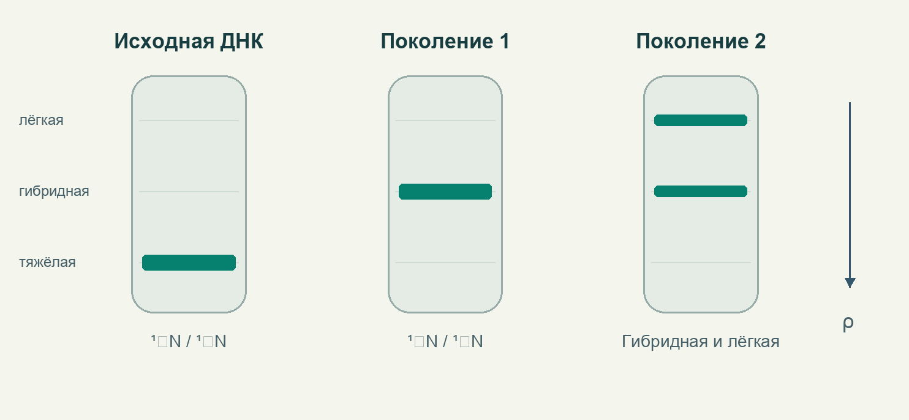
Рисунок. Первое поколение и прогноз второго

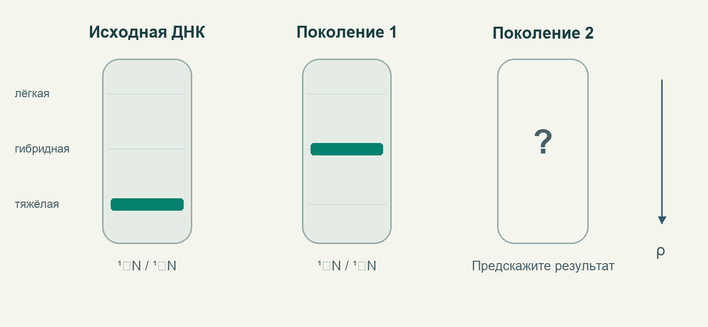
Какое наблюдение впервые позволяет различить полуконсервативную и дисперсную модели?
Две раздельные полосы после второго удвоения. После первого обе модели предсказывают промежуточную плотность.
Химия удлинения ДНК
ДНК-полимераза работает в участке, где матрица уже образовала короткий дуплекс с праймером. В активный центр поступает дезоксирибонуклеозидтрифосфат (dNTP). Его основание образует пару с очередным основанием матрицы. При участии ионов металла, обычно Mg²⁺, кислород 3′-гидроксильной группы праймера атакует α-фосфат входящего нуклеотида. Возникает новая фосфодиэфирная связь, а два наружных фосфата уходят в составе пирофосфата. Гидролиз пирофосфата способствует продвижению суммарной реакции вперёд.
Новый нуклеотид сам предоставляет следующий свободный 3′-конец. Поэтому дочерняя цепь растёт в направлении 5′→3′, а полимераза продвигается по матрице в направлении 3′→5′. Репликативная ДНК-полимераза умеет удлинять праймер. Начальную короткую цепь создаёт праймаза, способная соединить первые рибонуклеотиды без готового праймера. Если в активном центре репликативной полимеразы возникла неправильная пара, замедление удлинения повышает вероятность переноса 3′-конца в корректирующий экзонуклеазный центр. После удаления ошибочного звена синтез может продолжиться.
Полярность матрицы и необратимость суммарного процесса относятся к разным сторонам реакции. Антипараллельное спаривание определяет, какой конец матрицы читает фермент. Энергия трифосфата и последующий гидролиз пирофосфата связаны с образованием связи в дочернем остове.

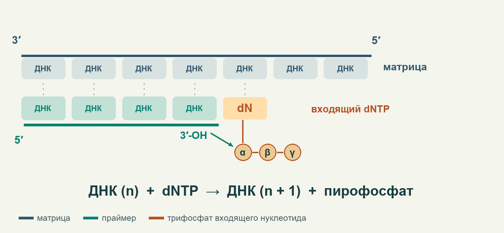
ДНК-полимераза присоединяет нуклеотид к свободному 3′-концу растущей цепи.
Что произойдёт с удлинением, если у последнего сахара праймера отсутствует 3′-OH?
Для очередной фосфодиэфирной связи отсутствует необходимая гидроксильная группа. Удлинение этого конца останавливается.
Инициация у Escherichia coli
В кольцевой хромосоме E. coli репликация обычно начинается в области oriC. Белок-инициатор DnaA узнаёт участки двухцепочечной ДНК и образует сборку, которая способствует локальному раскрытию соседней области. Этого первого расплетения достаточно для загрузки репликативных геликаз. Белок DnaC помогает разместить кольцевые геликазы DnaB на одиночных цепях. После активации геликазы движутся навстречу ещё не раскрытым участкам с двух сторон от oriC. Образуется репликационный пузырь с двумя вилками.
У каждой вилки геликаза DnaB окружает матрицу отстающей цепи и перемещается по ней в направлении 5′→3′, расходуя АТФ. Праймаза DnaG взаимодействует с геликазой и создаёт короткие РНК-праймеры. На стыке праймера с матрицей собирается работающий полимеразный комплекс. Указанные названия относятся к E. coli. В других группах бактерий встречаются иные факторы загрузки, а система репликации архей по составу многих белков родственна эукариотической.
В понятии «инициация» объединены несколько последовательных событий. Узнавание oriC локализует запуск, разъединение цепей открывает субстрат для геликазы, а синтез праймера даёт конец, который сможет удлинить полимераза. Связывания одного DnaA для построения дочерней цепи недостаточно.

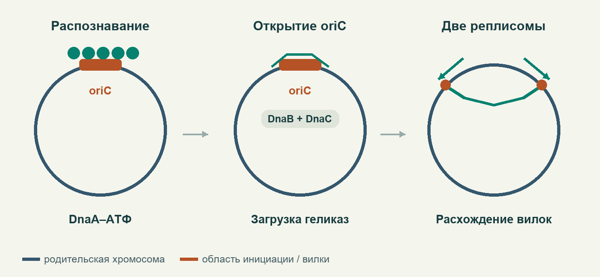
Почему единственная область oriC на кольцевой хромосоме даёт две вилки?
В начале репликации формируются две противоположно ориентированные реплисомы. Каждая раскрывает свой участок родительского дуплекса.
Лицензирование и запуск у эукариот
Ядерная хромосома эукариот длинная и линейная. Вдоль неё заложено множество потенциальных областей начала. В конце митоза и в G1, при низкой активности циклинзависимых киназ, комплекс ORC вместе с Cdc6 и Cdt1 обеспечивает загрузку двух колец MCM2–7 на двуцепочечную ДНК. Кольца располагаются навстречу друг другу и образуют неактивный двойной гексамер. Такая хромосомная область получила лицензию на репликацию. Через неё ещё может не проходить ни одной действующей вилки.
В S-фазе киназы DDK и S-CDK создают условия для привлечения Cdc45 и комплекса GINS. Вместе с MCM2–7 они образуют активную геликазу CMG. Две геликазы расходятся. Каждая окружает одноцепочечную матрицу ведущей цепи и движется по ней в направлении 3′→5′. Новая загрузка MCM в этом периоде подавлена. Разделение лицензирования и запуска позволяет клетке скопировать участок один раз за цикл. Часть лицензированных участков проходит репликацию от соседних вилок до собственного запуска. Возле вилки родительские нуклеосомы разбираются, а позади часть старых гистонов вместе с новыми вновь упаковывает дочернюю ДНК.
В начале S-фазы на хромосоме присутствуют участки, которые уже скопированы, участки с работающими вилками и ещё не активированные лицензированные начала. Наличие MCM на хроматине и включение нуклеотидов в новую ДНК поэтому характеризуют разные стадии процесса.

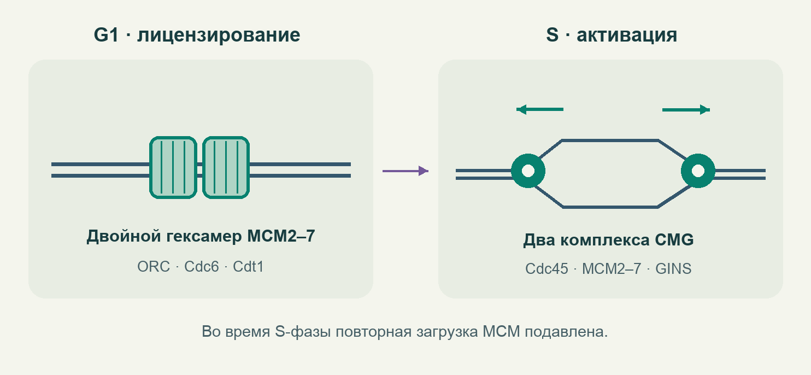
Рисунок. Матрицы геликаз DnaB и CMG

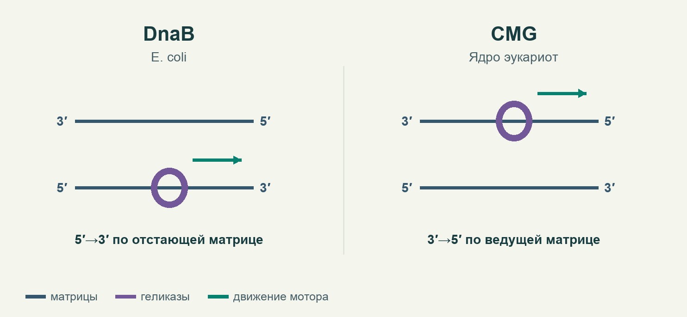
Может ли лицензированный участок быть скопированным без запуска собственной пары вилок?
Да. Вилка соседнего репликона может пройти через этот участок раньше его активации.
Белки у репликационной вилки
Репликационная вилка — подвижная граница между исходной двойной спиралью и разошедшимися матрицами. Геликаза разводит цепи за счёт гидролиза АТФ. Если хромосома не может свободно вращаться, раскрытие спирали создаёт положительное сверхскручивание впереди вилки. Топоизомеразы снимают напряжение посредством обратимых разрывов одного или двух остовов ДНК. У E. coli существенную роль играет ДНК-гираза, у эукариот напряжение могут снимать топоизомеразы I и II. Топоизомераза восстанавливает целостность разрезанного ею остова в ходе собственного каталитического цикла.
Одиночная ДНК склонна к повторному спариванию и образованию внутримолекулярных структур. Бактериальный SSB и эукариотический RPA связывают открытые участки и поддерживают их доступность для ферментов. Праймаза создаёт точки начала синтеза. Репликативные полимеразы удлиняют праймеры, а скользящие зажимы удерживают полимеразы у ДНК. Эти участники образуют динамический комплекс — реплисому. Реплисома сопровождает вилку. Топоизомераза действует впереди на ещё не раскрывшейся ДНК, а созревание фрагментов продолжается и позади вилки.
Положение белка на рисунке можно предсказать по его субстрату. Геликазе нужен участок разделения цепей, SSB связывается с одиночной ДНК, а репликативной полимеразе необходим стык дуплекса с одноцепочечной матрицей. Эти требования объясняют пространственный порядок участников.

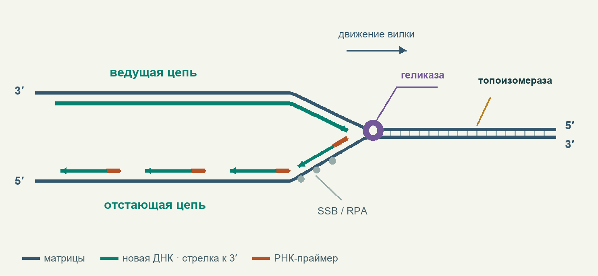

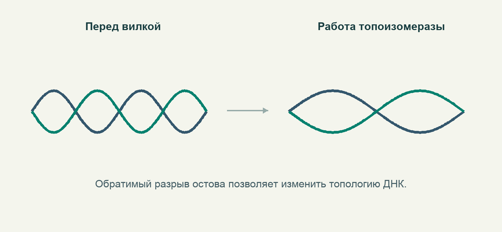
Где сначала накопится положительное сверхскручивание при продолжающемся расплетении топологически ограниченного дуплекса?
В родительском дуплексе впереди вилки. Дочерние дуплексы позади вилки также могут переплетаться при её вращении.
Полимеразы и скользящий зажим
Процессивность характеризует, сколько нуклеотидов полимераза в среднем успевает присоединить за одно связывание с матрицей. Репликативные полимеразы образуют комплекс с кольцевым скользящим зажимом. Он окружает двухцепочечную ДНК и способен перемещаться вдоль неё. Связь с зажимом снижает вероятность того, что полимераза уйдёт в раствор. У E. coli β-зажим состоит из двух одинаковых субъединиц. Эукариотический PCNA состоит из трёх. Оба комплекса образуют кольцо сходной архитектуры.
Закрытое белковое кольцо требуется разместить на протяжённом дуплексе у границы праймера и матрицы. Эту работу выполняет АТФ-зависимый загрузчик. У бактерии он входит в комплекс ДНК-полимеразы III, у эукариот его называют RFC. В ходе цикла загрузки зажим раскрывается, охватывает ДНК и закрывается. Репликативная полимераза получает подвижную точку крепления. У отстающей цепи новые границы праймера и матрицы возникают многократно, поэтому загрузка зажимов повторяется.
Зажимы можно сравнить независимо от нуклеотидной последовательности матрицы. Отверстие кольца допускает прохождение дуплекса. На наружной поверхности зажима остаются участки взаимодействия с полимеразой и с белками, участвующими в последующей обработке дочерней ДНК.

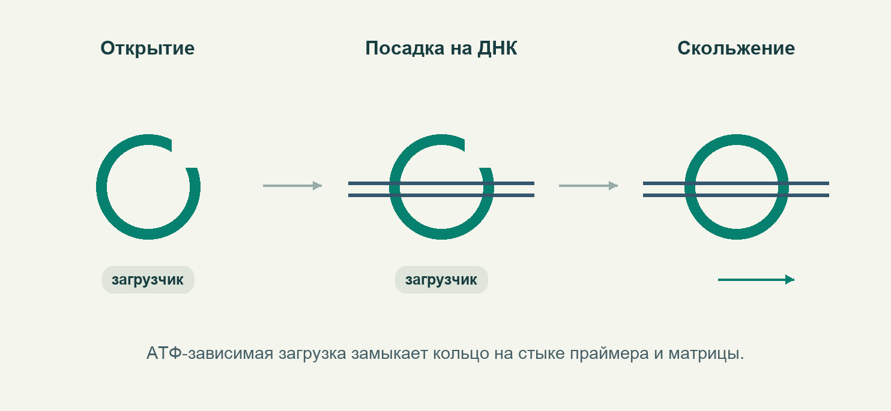
Как изменится средняя длина продукта одного связывания полимеразы при утрате эффективного взаимодействия с зажимом?
Средняя длина уменьшится. Снижение процессивности само по себе не меняет направления синтеза и правила выбора комплементарного нуклеотида.
Ведущая и отстающая цепи
Матрицы антипараллельны. У одной из них направление движения вилки совпадает с направлением считывания 3′→5′. Дочерняя цепь растёт концом к вилке и в обычном режиме синтезируется непрерывно. Её называют ведущей. Другая матрица открывается в противоположной ориентации. На каждом вновь открытом участке праймаза создаёт праймер, и от его 3′-конца полимераза растит ДНК в сторону ранее синтезированного участка. Так возникают фрагменты Оказаки. Начало самого нового фрагмента находится ближе всего к вилке.
У E. coli обе дочерние цепи в основном синтезирует ДНК-полимераза III. У эукариот комплекс Pol α–праймаза сначала делает короткую РНК, затем удлиняет её коротким отрезком ДНК. Основной синтез ведущей цепи обычно продолжает Pol ε, отстающей — Pol δ. Это распределение характеризует нормальную работающую вилку. Длины фрагментов Оказаки различаются: для бактерий характерен порядок одной-двух тысяч нуклеотидов, для эукариот — порядка ста-двухсот. У эукариот длина фрагментов сопоставима с расстоянием между соседними нуклеосомами.
Полуконсервативность описывает состав двух конечных дуплексов. Полупрерывный синтез описывает способ сборки двух дочерних цепей у одной вилки. Это независимые характеристики. Даже прерывисто синтезированная цепь после созревания образует непрерывный остов.

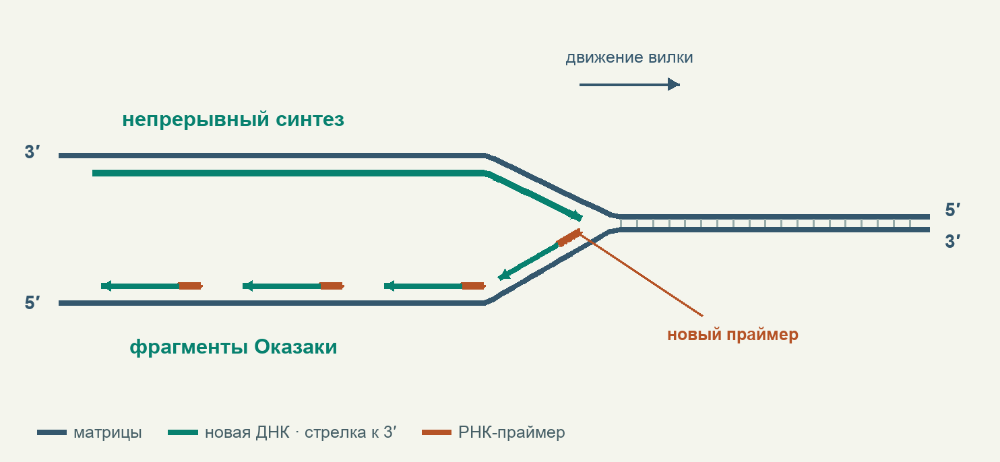
Рисунок. Смена полимераз у бактерий и эукариот

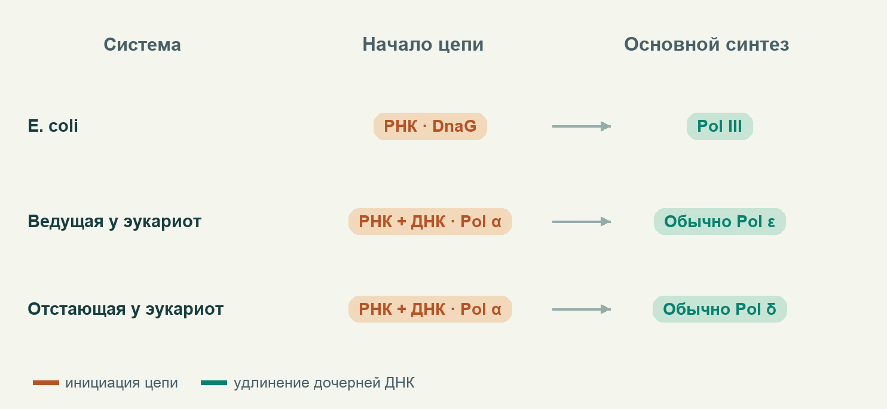
Каждый фрагмент Оказаки растёт от своего праймера в направлении 5′→3′.
Как изменится положение нового праймера отстающей цепи, если правая вилка продвинется ещё правее?
Он появится на только что открытом участке ближе к новому положению вилки. Его 3′-конец будет удлиняться в сторону предыдущего фрагмента.
Созревание фрагмента Оказаки
К моменту встречи двух фрагментов их сахарофосфатные остовы ещё разобщены. У E. coli ДНК-полимераза I может удалять находящийся впереди РНК-праймер своей 5′→3′-экзонуклеазной активностью и одновременно достраивать ДНК с соседнего 3′-конца. Удалению РНК в составе гибрида РНК–ДНК также способствует РНКаза H. После замещения праймера нуклеотидами ДНК между соседними звеньями остаётся надрез: с одной стороны есть 3′-OH, с другой — 5′-фосфат. Пропущенных оснований на этой стадии уже нет.
У эукариот Pol δ, продвигаясь к предыдущему фрагменту, способна оттеснять его 5′-конец. Образуется выступающий одноцепочечный участок, или лоскут. Короткие лоскуты отрезает FEN1. В более длинных промежуточных структурах могут участвовать и другие нуклеазы, в том числе DNA2. ДНК-лигаза I замыкает последнюю фосфодиэфирную связь. Для лигирования необходимы непосредственно соседствующие 3′-OH и 5′-фосфат. Если между ними осталась брешь, сначала её заполняет полимераза.
Участок с надрезом может сохранять нормальное спаривание комплементарных оснований по обе стороны от дефекта. Поэтому схема, на которой видны только пары оснований, не позволяет судить о завершённости лигирования. Для проверки проследите непрерывность каждой стороны сахарофосфатного остова.

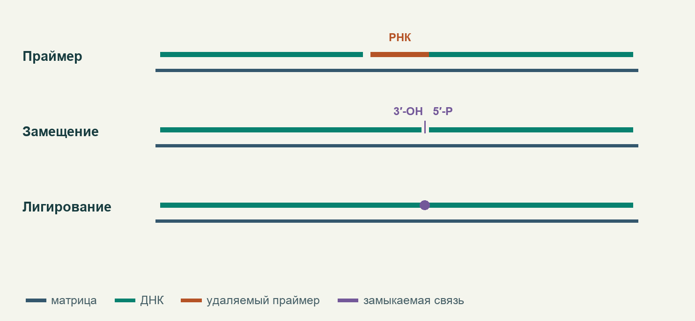
Рисунок. Замещение праймера в двух системах

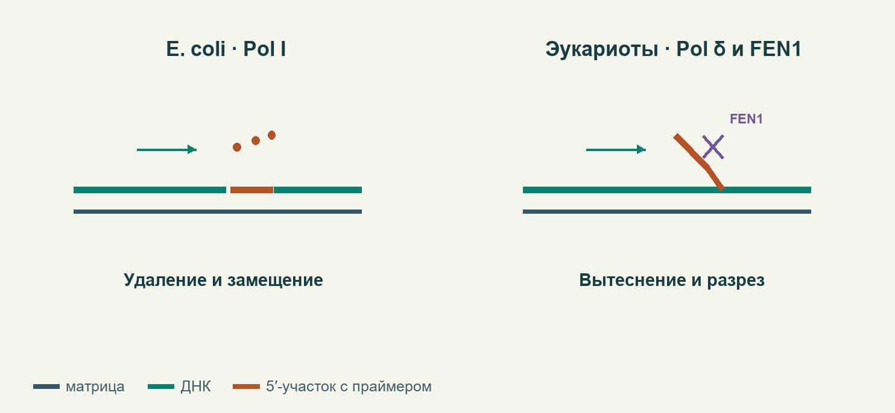
ДНК-лигаза соединяет соседние 3′-OH и 5′-фосфат, восстанавливая непрерывность остова.
Одна молекула содержит брешь длиной в нуклеотид, вторая — надрез между соседними нуклеотидами. На каком участке достаточно лигазы?
На надрезе с подходящими концами. Для заполнения бреши нужен нуклеотид, который присоединит полимераза.
Одна матрица по обе стороны от точки начала
Обозначения «ведущая» и «отстающая» относятся к синтезу у конкретной вилки. Чтобы прочитать репликационный пузырь, сначала подпишите концы обеих родительских цепей. Затем поставьте отдельную стрелку движения для каждой вилки. В каждом плече пузыря найдите матрицу, которая в сторону движения вилки ориентирована 3′→5′. На ней 3′-конец дочерней цепи может следовать за геликазой. На второй матрице нарисуйте несколько фрагментов, начиная каждый с праймера возле того места, где в момент его закладки находилась вилка.
Например, верхняя родительская цепь проходит слева направо от 3′ к 5′. У правой вилки на этой матрице непрерывно удлиняется ведущая дочерняя цепь. У левой вилки та же верхняя родительская цепь служит матрицей отстающей. У каждого короткого фрагмента на этой верхней матрице растущий 3′-конец обращён вправо, то есть от левой вилки к уже скопированной области. Нижняя матрица даёт зеркальное по ролям распределение. Если перевернуть рисунок, сохраняются химические направления всех цепей.
Область, копирование которой началось от одной точки, называют репликоном. У эукариот расстояние до ближайшей встречной вилки зависит от того, какие соседние начала успели активироваться. По одной карте потенциальных начал точное место будущей встречи определить нельзя.
Если верхняя родительская цепь ориентирована слева направо 5′→3′, у какой вилки она служит матрицей ведущей цепи?
У левой. При движении справа налево эта матрица считывается в направлении 3′→5′.
Терминация и разделение дочерних молекул
Терминация начинается при сближении двух встречных вилок. Последний отрезок родительского дуплекса раскрывается, оставшиеся промежутки достраиваются, стыки лигируются. Белки реплисом должны покинуть ДНК. У E. coli полярные комплексы Tus–Ter ограничивают движение вилки с одной стороны и помогают удерживать зону встречи в определённой области кольца. Само завершение репликации возможно и при встрече вилок вне такого комплекса. Система Tus–Ter характерна лишь для части бактерий.
Кольцевые дочерние молекулы после синтеза могут оставаться взаимно сцепленными. Топоизомераза IV E. coli временно разрезает обе цепи одного дуплекса, проводит через разрыв другой дуплекс и восстанавливает остов. Последовательные циклы устраняют зацепления. У эукариот множество пар соседних вилок встречается во внутренних областях линейных хромосом. В завершение участвуют топоизомераза II и системы демонтажа CMG. Удвоенные хроматиды при этом остаются соединены когезином до соответствующего этапа деления.
Внутренний участок линейной хромосомы может быть последним нескопированным промежутком между двумя репликонами. Его достраивание подчиняется той же химии, что и синтез вдоль всей хромосомы. Теломерный конец потребует отдельного механизма независимо от положения такой внутренней встречи.

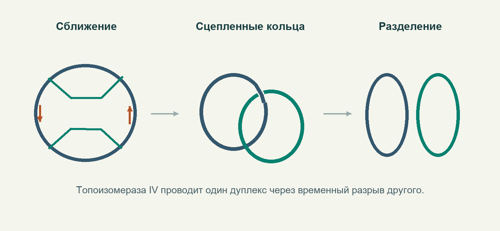
Рисунок. Последний участок между вилками

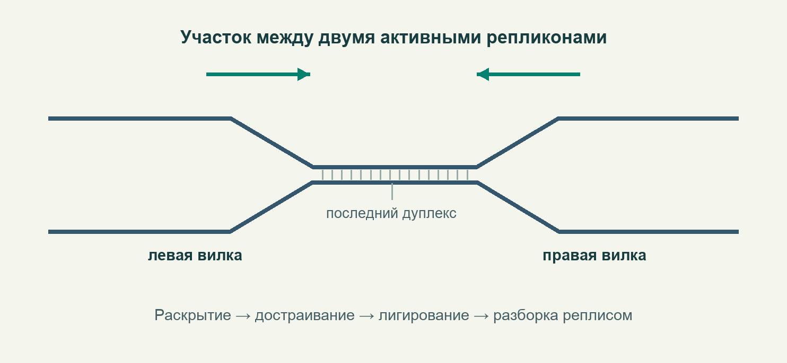
Почему полностью скопированная кольцевая молекула ещё может быть не готова к расхождению?
Два ковалентно замкнутых дочерних кольца могут оставаться сцепленными. Топоизомераза IV устраняет эти топологические связи.
Концевая репликация и теломераза
У конца линейной хромосомы геометрия синтеза меняется. После удаления крайнего праймера отстающей цепи с внешней стороны отсутствует соседний фрагмент, 3′-конец которого можно было бы удлинить. Обычная полимераза не может заполнить такой терминальный участок. Обработка концов после репликации также участвует в формировании характерного одноцепочечного 3′-выступа теломеры. Внутренняя встреча вилок и обслуживание физического конца хромосомы решают разные задачи.
Теломераза — рибонуклеопротеиновая обратная транскриптаза. У неё есть собственная РНК с матричным участком и каталитическая белковая субъединица TERT. Выступающий G-богатый 3′-конец ДНК спаривается с РНК теломеразы. Фермент удлиняет этот конец теломерными повторами и может переместиться для следующего цикла. После этого комплекс Pol α–праймаза начинает синтез комплементарной цепи. В зрелой теломере сохраняется 3′-выступ. Активность теломеразы различается между типами клеток. При низкой активности и повторных делениях средняя длина теломер может уменьшаться.
Матрица и праймер при работе теломеразы принадлежат разным типам нуклеиновых кислот. РНК входит в фермент, тогда как свободный 3′-конец принадлежит хромосомной ДНК. Образующийся продукт ковалентно продолжает этот конец хромосомы.

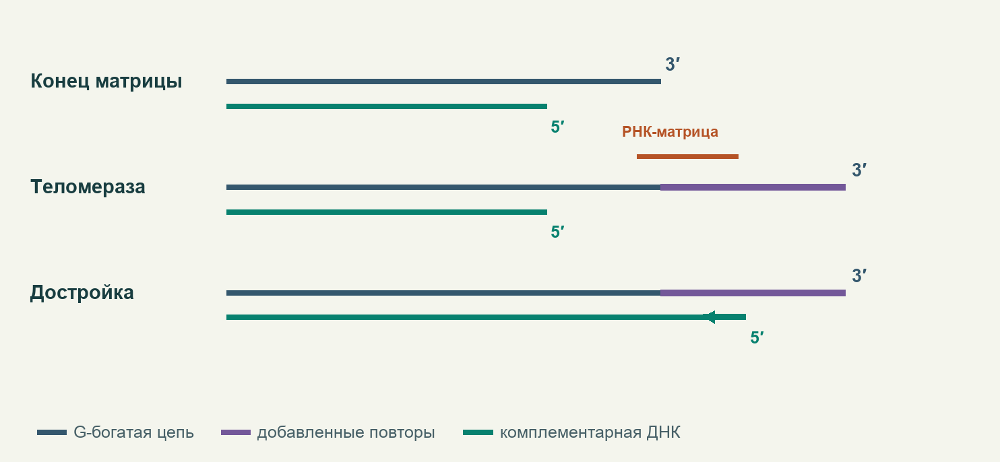
Какую цепь непосредственно удлиняет теломераза и какая молекула задаёт последовательность новых звеньев?
Теломераза удлиняет G-богатый 3′-конец ДНК. Последовательность повтора определяется матричным участком её собственной РНК.
Сравнение реплисом
Для каждой строки укажите субстрат белка и участок молекулы, на котором он действует. Так можно восстановить порядок событий от узнавания точки начала до разделения дочерних дуплексов.

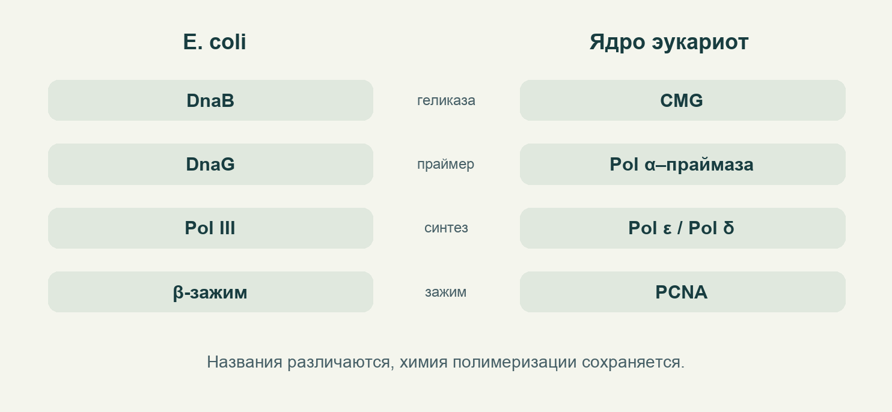
| Функция | Escherichia coli | Ядро эукариот |
|---|---|---|
| Узнавание начала | DnaA, область oriC | ORC, Cdc6 и Cdt1 |
| Репликативная геликаза | DnaB, загрузке помогает DnaC | CMG = Cdc45 + MCM2–7 + GINS |
| Открытая одноцепочечная ДНК | SSB | RPA |
| Закладка праймера | Праймаза DnaG | Pol α–праймаза, затем короткая ДНК |
| Основной синтез ДНК | Pol III на обеих цепях | Обычно Pol ε на ведущей, Pol δ на отстающей |
| Зажим и загрузчик | β-димер и загрузчик Pol III | PCNA и RFC |
| Замещение праймера и лигирование | Pol I, РНКаза H, лигаза LigA | Pol δ, FEN1, лигаза I |
| Топологическая развязка | Преимущественно топоизомераза IV | Топоизомераза II |
| Концы хромосом | Основная хромосома кольцевая | Теломеры и теломераза в соответствующих клетках |
Источники и иллюстрации
- Б. Альбертс и др. Молекулярная биология клетки. 5-е изд., т. I, гл. 5, разделы о вилке и инициации.
- Д. Нельсон, М. Кокс. Основы биохимии Ленинджера. Т. III, гл. 25 «Метаболизм ДНК».
- M. Meselson, F. Stahl. The replication of DNA in Escherichia coli. PNAS, 1958.
- R. Okazaki и др. Mechanism of DNA chain growth. I. PNAS, 1968.
- P. Burgers, T. Kunkel. Eukaryotic DNA Replication Fork. Annual Review of Biochemistry, 2017.
- J. Dewar, J. Walter. Mechanisms of DNA replication termination. Nature Reviews Molecular Cell Biology, 2017.
- RCSB PDB 2POL. β-зажим E. coli, рентгеноструктурный анализ, 2,5 Å. Биологическая сборка 1.
- RCSB PDB 1PLQ. PCNA Saccharomyces cerevisiae, рентгеноструктурный анализ, 2,3 Å. Биологическая сборка 1.
- J. Lewis и др. Mechanism of replication origin melting nucleated by CMG helicase assembly. Nature, 2022.
Схемы и учебные видео созданы для этого конспекта по указанным источникам. Цветные траектории на молекулярных моделях проходят через экспериментальные координаты Cα. В схемах размеры белков и длины фрагментов условны.